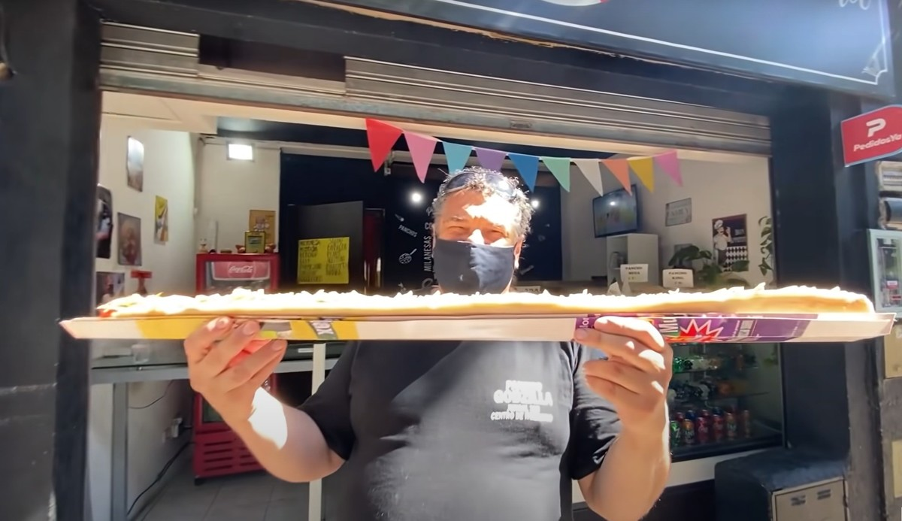

¿Qué es un pancho?
"Pancho" es una forma coloquial de referirse a un perrito caliente o hot dog. Se trata de una salchicha cocida servida dentro de un pan y acompañada con ingredientes como ketchup, mostaza, mayonesa, etc.

Historia
El pancho tiene raíces en el hot dog estadounidense, que proviene de inmigrantes alemanes que llevaron las salchichas tipo frankfurter o wiener al país en el siglo XIX.
Llegada a Argentina: ¿por qué "pancho"?
Se cree que el nombre "pancho" surgió como una forma local de bautizar el hot dog. Existen varias teorías:
• Podría haber sido una marca de salchichas o un nombre comercial.
• Una adaptación simpática o un apodo local.
• Una simplificación humorística del nombre "Frankfurter".
Cultura del pancho
En Argentina, el pancho es muy popular: kioscos, cumpleaños, carritos callejeros y versiones gourmet.
¿Dónde está el mejor pancho?
Algunos locales buscan llevar esta comida al siguiente nivel. En el siguiente video, el youtuber "Pimpeano" recorre pancherías de Buenos Aires.